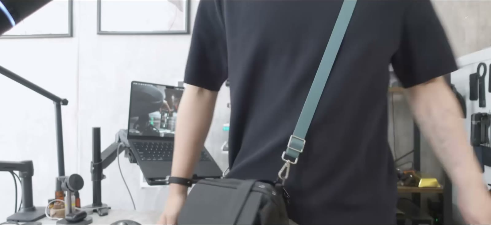

かばん
01 StandardProducts スマホショルダー（BL）↗ 02 無印良品 自由に組み合わせられるストラップ↗中に入っているもの
01 QCY MeloBuds N70↗ 02 aso クリアブックカバー fog↗ 03 カンミ堂 ココフセン COLOR↗ 04 DELFONICS ロルバーン ポケット付メモ L↗ 05 DELFONICS ロルバーン ポケット付メモ クリアM↗ 06 DELFONICS ロルバーン ポケット付メモ ミニ↗ 07 パイロット ジュースアップ4 0.4↗ 08 パイロット ジュースアップ クラシックグロッシーカラー↗ 09 三菱鉛筆 ジェットストリーム 4&1 0.5↗登場した本
01 湊 かなえ リバース↗ 02 香西 秀信 論より詭弁 反論理的思考のすすめ↗その他おすすめ
01 Aoiiena 耳栓↗ 02 Loop Experience 2↗動画のもくじ
0:23スタンダードプロダクツのバッグ紹介 4:19かばんの中身 8:48実際に持ってみる
※ 掲載しているのは、この回の動画で実際に紹介したものです。
※ 商品リンクにはAmazonアソシエイトを含むアフィリエイト広告が含まれます。価格・在庫はリンク先をご確認ください。
ほかのかばん
2026.08tomtoc アーバンEX T77 2026.07tomtoc Explorer T21 2026.05StandardProducts 2wayバッグ｜iPad mini編 2026.04読書かばん